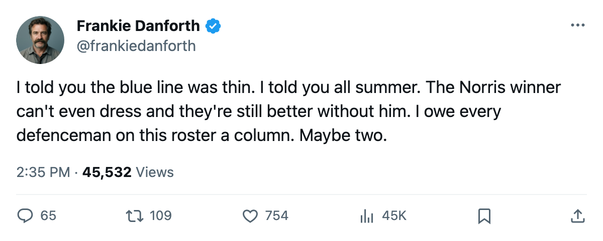
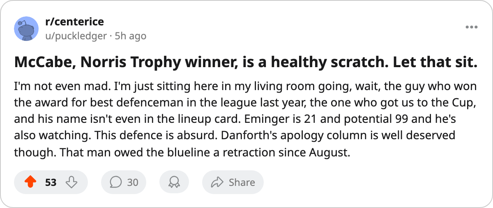

TOR
TORDANFORTH: the Norris winner on the bench, 1 goal allowed in 2 games, and the defence I owe an apology to
Bryan McCabe won the Norris last season. Tomorrow he watches from the bench again. The six who play have conceded 1 goal in 2 games.
 Frankie DanforthColumnist · Queen City Telegram
Frankie DanforthColumnist · Queen City Telegram
Code Green

 Bryan McCabe84 won the Norris Trophy last season, the one handed to the best defenceman in a run that ended with the Stanley Cup on Centre Ice. That defence allowed 8 goals in 6 games in the Final. The defence I am watching tonight has allowed 1 goal in 2. McCabe is a healthy scratch.
Bryan McCabe84 won the Norris Trophy last season, the one handed to the best defenceman in a run that ended with the Stanley Cup on Centre Ice. That defence allowed 8 goals in 6 games in the Final. The defence I am watching tonight has allowed 1 goal in 2. McCabe is a healthy scratch.
I have spent 6 months on this page telling you the fourth line is a tax, suspecting every winger who laced up in blue, and treating the back end as a question mark that a summer of youth development might erase. The back end was never the problem. It's the answer. I got it wrong, and I would rather own that in October than in April.
 Rostislav Klesla87 logs 34.5 minutes a night.
Rostislav Klesla87 logs 34.5 minutes a night.  Barret Jackman86 logs 33.0. The Bureau's Development Index has Klesla at +8, pushing his 78 base to an 87 overall. A 23-year-old carrying the top pair and making it look routine. Jackman has 2 assists on 33.0 minutes of work, the kind of offensive contribution you used to get from the old pair in March, delivered in game 2.
Barret Jackman86 logs 33.0. The Bureau's Development Index has Klesla at +8, pushing his 78 base to an 87 overall. A 23-year-old carrying the top pair and making it look routine. Jackman has 2 assists on 33.0 minutes of work, the kind of offensive contribution you used to get from the old pair in March, delivered in game 2.
| Player | MPG | Points | Overall | Form | Status |
|---|---|---|---|---|---|
| Klesla | 34.5 | 0 | 87 | +8 | Dressed |
| Jackman | 33.0 | 2 | 86 | — | Dressed |
 Kaberle85 Kaberle85 | 12.5 | 1 | 85 | — | Dressed |
 Fischer84 Fischer84 | 13.0 | 1 | 84 | — | Dressed |
| McCabe | — | — | 84 | — | Scratch |
| Eminger82 | — | — | 82 | — | Scratch |
 Hainsey77 Hainsey77 | — | — | 77 | — | Scratch |
Behind the top pair, Tomas Kaberle and Jiri Fischer have 1 assist each on 12.5 and 13.0 minutes. They are not carrying the load. But they are good enough to keep Steve Eminger, 21 years old with a 99 potential and $2.20M on 4 years, in the press box. Ron Hainsey, 77 overall with 97 potential and $1.40M on 6 years, is also watching.
Three defencemen on the bench. A Norris Trophy winner among them. And the six who play have conceded 1 goal in 2 games, with  Roberto Luongo97 in net every minute.
Roberto Luongo97 in net every minute.
The Panic Meter reads Code Green. Not because Toronto is 2-0. A team that scores 8 and allows 1 is going to win some games. Code Green because I spent a whole offseason worried about a defence that turned out to be the deepest unit on this roster, and the right thing to do is say so now, in a good month, before the first losing streak makes the apology sound like something other than what it is.
I still want a centre behind  Mats Sundin92. But I no longer want it because I think the defence can't hold. It can. I just did not know that yet.
Mats Sundin92. But I no longer want it because I think the defence can't hold. It can. I just did not know that yet.

